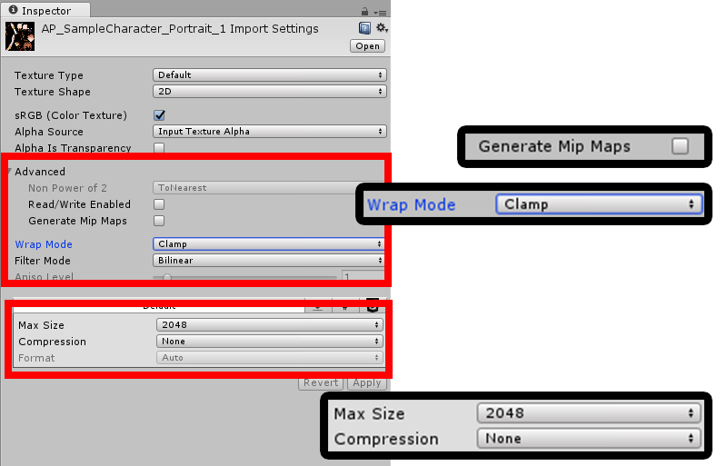

AnyPortrait > マニュアル > 高品質の画像
高品質の画像
1.0.0

PSDファイル機能を使用してAtlas画像をインポートするか、外部テクスチャアセットを開くと、デフォルトで圧縮された状態になります。
実行したい環境に応じて、必然的に低品質を使用する必要がありますが、
しかし、高品質のキャラクターを作成したい場合は、圧縮された画像が、かなり悲しいことになることがあります。
メモリ、容量、グラフィックス性能が適切な場合を解凍して高精細な画像を得ることができます。

高画質の画像を使用したいとき、 「Texture Asset」の「Import Settings」を変更してください。
1. 「Generate Mip Maps」の選択を解除します。
2. 「Wrap Mode」を「Clamp」に変更します。(オプション)
3. 「Max Size」をAtlasのサイズに変更して、「Compression」を「None」に変更してください。
(注：「Wrap Mode」は、品質と関連がありませんが、メッシュを作成するときに便利なことができます。)

AnyPortraitエディタでは、高品質の画像が適用されていることがわかります。